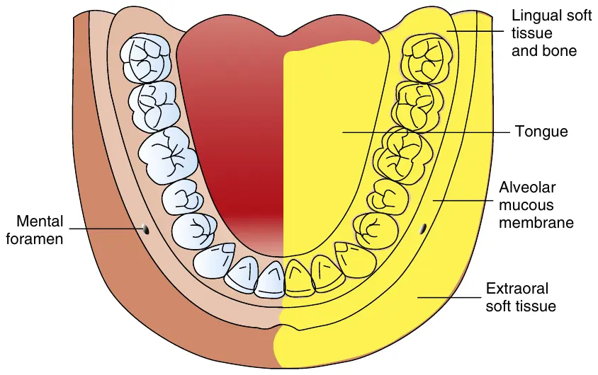

نسخه استخراجشده؛ ترجمه یا تأیید علمی انجام نشده است. وضعیت: captured
در رادیوگرافی پانورامیک بیمار ۴۵ سالهای که برای درمان ریشهی مولر اول پایین آمده، کانال مندیبولار دوشاخه دیده میشود. جلسهی قبل بلاک عصب آلوئولار تحتانی (IANB) فقط بخشی از دندان را بیحس کرد. کدام بلاک شانس بیشتری دارد؟

گاو-گیتس دارو را کنار تنهی عصب مندیبولار میریزد؛ پس تقریباً همهی شاخههای حسی V3 را با یک تزریق میگیرد:
ناحیهی بیحس: دندانهای فک پایین تا خط میانی، مخاط و پریوست باکال همان سمت، دو سوم قدامی زبان و کف دهان، بافت نرم لینگوال، تنهی مندیبل و بخش پایینی راموس، و پوست روی زیگوما، بخش خلفی گونه و ناحیهی تمپورال.
اگر پس از ۱٫۸ میلیلیتر بیحسی ناقص بود، تا ۱٫۲ میلیلیتر دیگر تزریق کن. در هر گاو-گیتس موفق زبان بیحس است؛ بیحسی لب پایین هم نشانهی خوبی است که عصب آلوئولار تحتانی گرفته.
اشتباه رایج دندانپزشکی که سالها IANB زده، این است که ناخودآگاه دارو را پایینتر، در همان جای همیشگی، میریزد. برای یادگیری یا یکی دو هفته گاو-گیتس را برای همهی بیماران فک پایین بزن، یا فعلاً فقط پس از شکست IANB سراغش برو.